Tower Hill → The City → Borough Market
~2.5km · 2-3小时 · 全家适合
2026年3月 · Hang Family
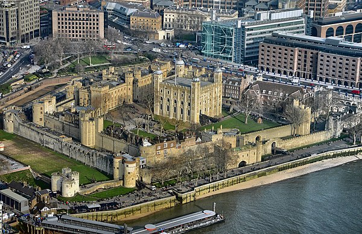
从Tower Hill地铁站出来就能看到。近千年历史的皇家城堡，外面拍照就很壮观，不需要买票进去。
⏱️ 10分钟拍照，然后沿Eastcheap路向西北走
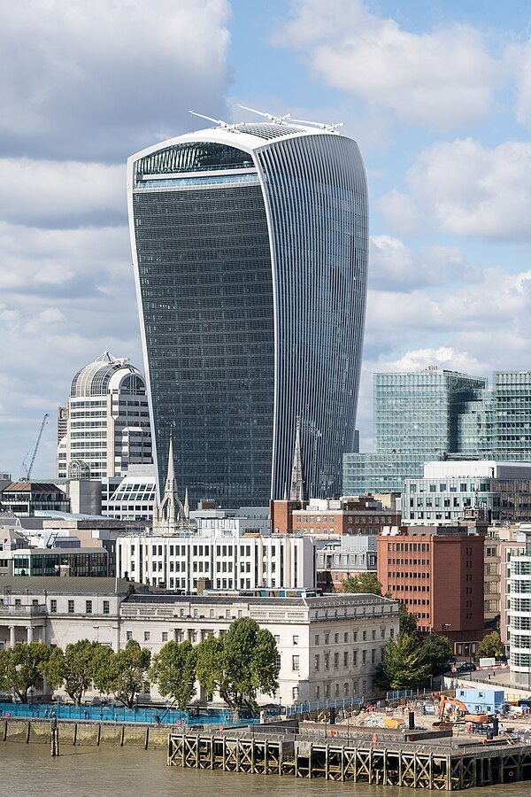
20 Fenchurch Street — 因外形像对讲机得名。顶楼的Sky Garden是伦敦最佳免费观景台！360°玻璃穹顶花园，俯瞰泰晤士河、塔桥、碎片大厦。
⚠️ 必须提前在 skygarden.london 预约（免费）| ⏱️ 30-45分钟
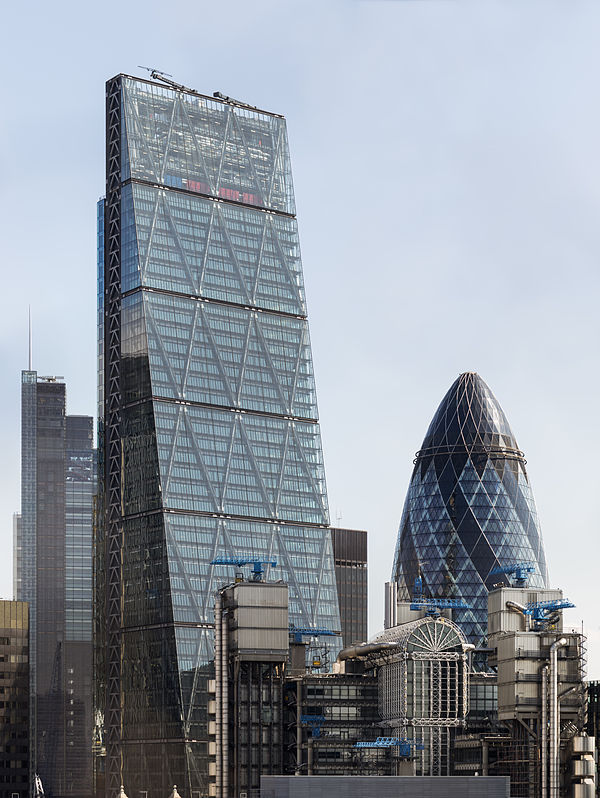
因楔形斜面外观像奶酪刨而得名。设计成倾斜角度是为了不遮挡从Fleet Street看St Paul's Cathedral的视线。旁边就是Leadenhall Market！
📸 站在Leadenhall Market入口拍摄角度最佳
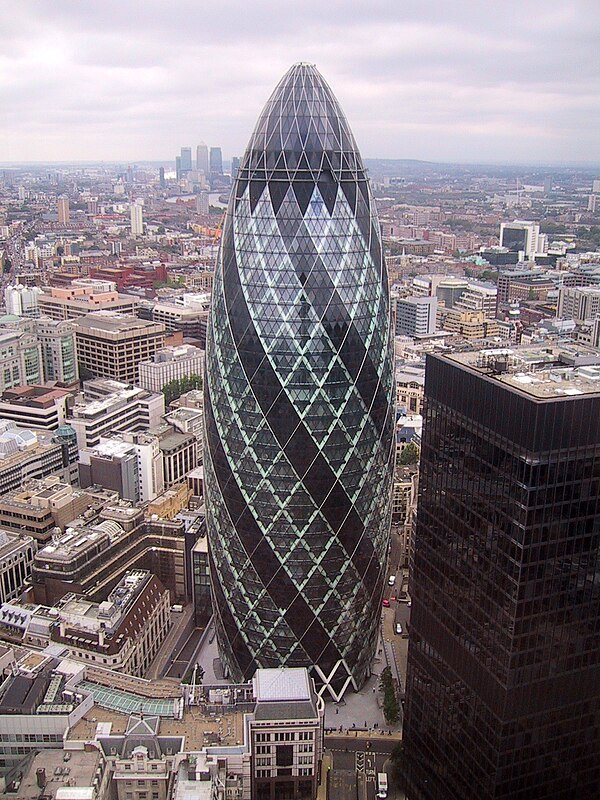
30 St Mary Axe — 伦敦最具辨识度的摩天楼！Norman Foster设计，2004年建成。子弹头外形灵感来自海洋生物Venus Flower Basket sponge。
📸 广场底部仰拍效果最好 | ⏱️ 10分钟
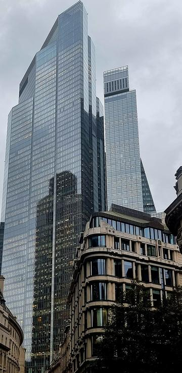
伦敦最高的办公楼！2020年建成，比碎片大厦低但比City所有楼都高。有免费公共观景区域、餐厅和美食广场。
💡 顶层有免费公共区域可以参观
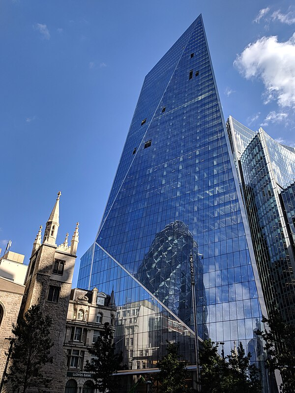
52 Lime Street — 因锋利的刀片般轮廓得名"手术刀"。2018年建成，与Cheesegrater隔街相望，两栋楼的倾斜方向刚好相反，形成有趣的视觉对比。
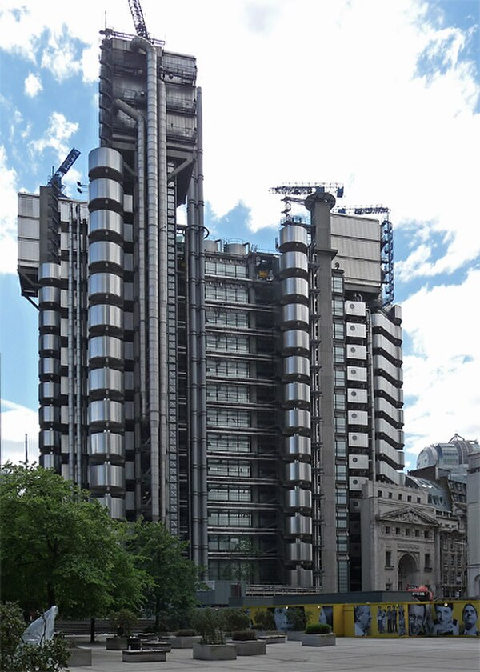
Richard Rogers（蓬皮杜中心同一设计师）的杰作！所有管道、电梯、楼梯都装在建筑外面，被称为"由内向外的建筑"。夜晚亮灯后像太空站。孩子们通常最喜欢这栋！
📸 从Lime Street角度拍最震撼
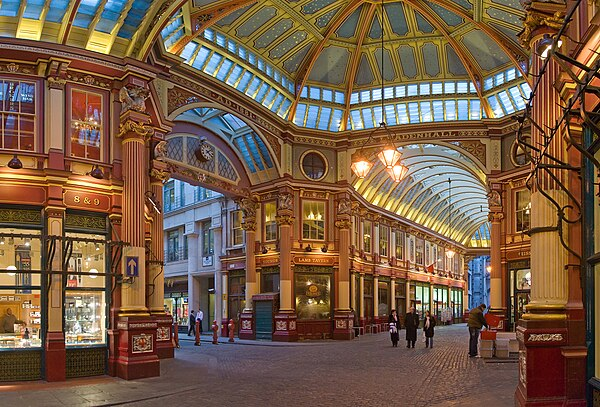
华丽的维多利亚时代室内市场，Harry Potter电影中对角巷的取景地！彩色拱顶和精致铁艺，随手拍都是大片。就在Cheesegrater旁边，不用绕路。
🪄 HP粉丝必打卡！Optician's shop门口就是电影场景
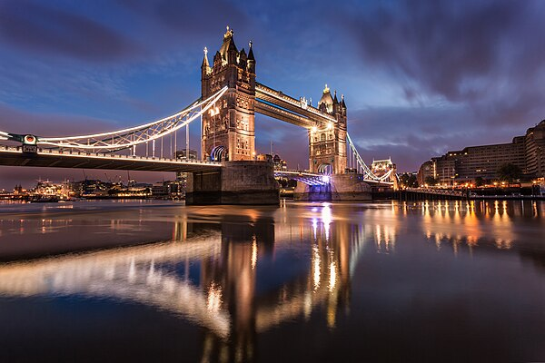
从Tower of London走2分钟就到。伦敦最经典的地标之一。可以走桥上的玻璃步道（Glass Floor Walkway, £12/成人），透明地板俯瞰泰晤士河！
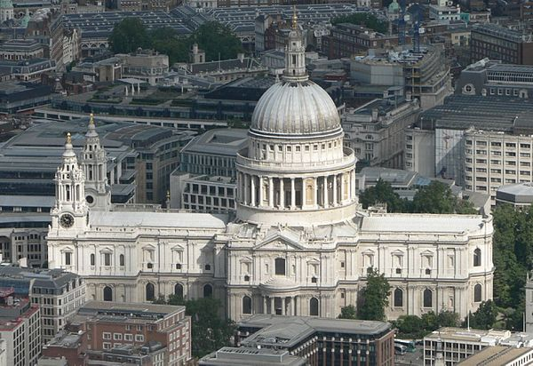
从Lloyd's Building走10分钟。Christopher Wren设计的巴洛克杰作。对面就是Millennium Bridge（千禧桥），可以拍到大教堂+现代桥的经典构图。
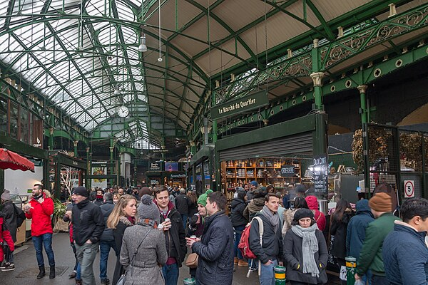
伦敦最有名的食品市场！上百个摊位，各国street food应有尽有。推荐：Bread Ahead甜甜圈、Kappacasein芝士三明治、各种手工汉堡。从Lloyd's过London Bridge走15分钟。
⏰ 周日 10:00-17:00 | 建议12:30-13:30来吃午餐
| 项目 | 费用 | 备注 |
|---|---|---|
| 🅿️ Cambridge Station停车 | ~£8 | Station Road Car Park |
| 🚆 火车往返 (4人) | ~£60-80 | 提前买更便宜，Family Railcard再打7折 |
| 🚇 伦敦地铁 (4人) | ~£20-30 | Contactless/Apple Pay，有每日封顶 |
| 🌿 Sky Garden | 免费 | 需提前预约 skygarden.london |
| 🍽️ Borough Market午餐 | ~£40-60 | Street food人均£10-15 |
| ☕ 饮料零食 | ~£10-15 | |
| 总计 | ~£140-190 |